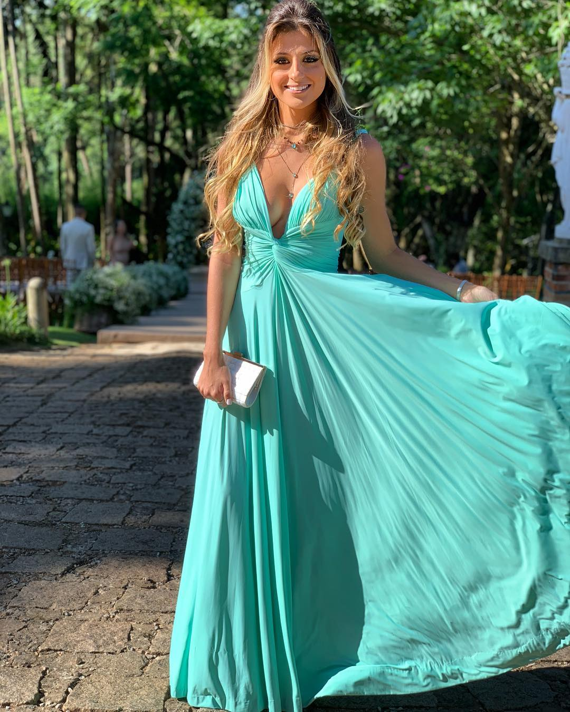
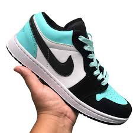

A cor verde água é um tom que lembra a
aparência da água em mares e piscinas. Por
ser uma cor ligada à natureza, ela significa
equilíbrio, tranquilidade, saúde e vitalidade.
Na decoração, essa tonalidade tem o poder de
transformar os ambientes quando aplicada em
objetos decorativos, mobiliários ou paredes.

